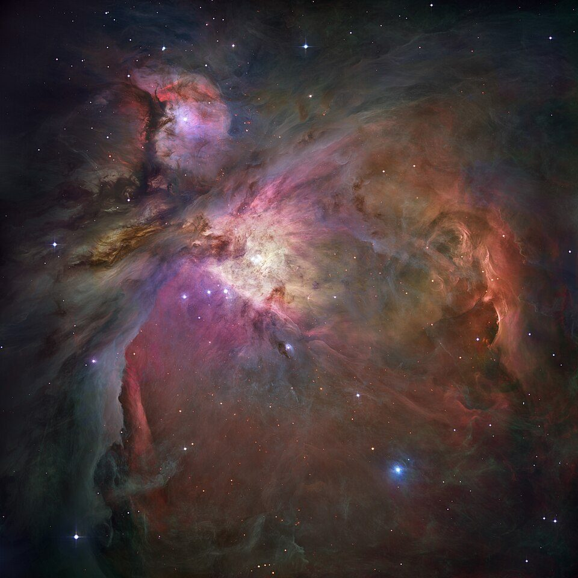

Nebulosas
Nubes de gas y polvo donde nacen las estrellas y donde quedan sus restos: los paisajes más bellos del cielo.


La palabra nebulosa viene del latín y significa «nube». Antes de los grandes telescopios, se llamaba así a cualquier mancha borrosa del cielo, incluidas las galaxias. Hoy el término se reserva para las nubes de gas y polvo del espacio interestelar, que son a la vez cunas y tumbas de estrellas.
Tipos de nebulosas
- De emisión: el gas brilla con luz propia, sobre todo en rojo, porque las estrellas jóvenes y calientes de su interior lo excitan con radiación ultravioleta. La de Orión es el ejemplo más famoso.
- De reflexión: el polvo refleja la luz de estrellas cercanas y se ve azulado, como el cielo. Las Pléyades están envueltas en una.
- Oscuras: nubes tan densas que tapan la luz de lo que hay detrás, como la célebre Cabeza de Caballo.
- Planetarias: las capas que expulsa una estrella como el Sol al final de su vida. No tienen nada que ver con planetas: el nombre viene de que, con telescopios pequeños, parecían discos de planetas.
- Restos de supernova: las nubes que deja la explosión de una estrella gigante, como la nebulosa del Cangrejo.
La nebulosa de Orión
A 1.350 años luz, es la región de formación de estrellas grande más cercana a la Tierra. Se ve a simple vista como una pequeña mancha en la «espada» de Orión, debajo de las tres estrellas del cinturón. En su interior, el telescopio Hubble ha encontrado cientos de estrellas recién nacidas y discos protoplanetarios, sistemas solares en plena formación.
Los Pilares de la Creación
En 1995, el Hubble fotografió en la nebulosa del Águila unas columnas de gas y polvo de varios años luz de altura. La imagen se convirtió en una de las más famosas de la historia de la ciencia. En su interior se están formando estrellas. En 2022 el telescopio James Webb volvió a fotografiarlas en infrarrojo, viendo a través del polvo.


La nebulosa del Cangrejo
El 4 de julio de 1054, astrónomos chinos registraron una «estrella invitada» tan brillante que se vio de día durante 23 días. Era una supernova. Hoy, en ese lugar del cielo, está la nebulosa del Cangrejo, una nube de restos que se expande a 1.500 km/s, con un púlsar en el centro que gira 30 veces por segundo.


Charles Messier y su lista
En el siglo XVIII, el francés Charles Messier buscaba cometas y se encontraba una y otra vez con manchas que no se movían. Para no confundirse hizo una lista de 110 objetos «molestos». Hoy el catálogo Messier es la lista favorita de los aficionados: M1 es el Cangrejo, M42 es Orión y M31 es la galaxia de Andrómeda.
Vídeos para entenderlo mejor
- Así NO es como luce una Nebulosa (La verdad detrás de las fotos de Hubble)Astrum Español · 82 mil visualizaciones
Los vídeos son de YouTube y de sus autores. Se cargan solo al pulsar sobre ellos. Ver todos los vídeos →